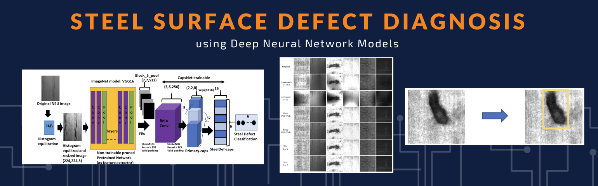

Abstract: In this study, an automated detection methodology is employed to handle large volumes of image data using the Neu database of 1440 grayscale images across six defect classes. Texture features are extracted via Gray-Level Co-Occurrence Matrix (GLCM) analysis, and these features are fed into a Random Forest Classifier, achieving an overall test accuracy of 89%. SHAP plots are utilized to interpret the model's outputs, providing clear visual explanations of the complex Random Forest model.

Abstract: This research introduces Fast Defect Recognition and Localization Network (FDRLNet) to correctly identify and localise surface flaws in steel manufacturing units. Vision-based systems and camera pictures categorise and pinpoint surface faults for automated industrial inspection and quality control. The publicly accessible Northeastern University (NEU-DET) surface defect dataset validates the suggested technique, which has strong prediction abilities at greater inference rates than existing competitor approaches. The research proposes real-time manufacturing fault identification technique.

Abstract: Manufacturing industries contemplate integrating computer vision and artificial intelligence into shop floor operations, such as steel surface defect identification, to realize smart manufacturing goals. However, inadequate annotated training datasets and reduced prediction abilities with image perturbations restrict the practical implementation. This paper introduces NSLNet framework utilizing ImageNet as a feature-extractor combined with adversarial training in the extracted feature space through Neural Structure Learning to address these barriers. The experiments on public (NEU) and synthetically generated datasets (ENEU) showed that the NSLNet could learn with few training samples maintaining resilience against image perturbations outperforming conventional models significantly and nearest deep learning competitors marginally.

Abstract: This paper provides a robust vision-based Surface Defect Classification system for automated industrial inspection using Histogram Equalization and Neural Structure Learning (NSL) with adversarial training. A new deep neural network architecture generates adversarial samples in the extracted feature space and is assessed using a frequently used steel surface defect dataset (NEU) and the Extended Diversity Enhanced (ENEU) dataset replicating shop floor circumstances. The proposed strategy outperforms ENEU and deep learning rivals by improving recognition accuracy from 87.7% to 92.4%. Adversarial training improves machine learning model generalisation.

Abstract: Surface defect recognition of products is a necessary process to guarantee the quality of industrial production. This paper proposes a hybrid model, S2D2Net (Steel Surface Defect Diagnosis Network), for an efficient and robust inspection of the steel surface during the manufacturing process. The S2D2Net uses a pretrained ImageNet model as a feature extractor and learns a Capsule Network over the extracted features. The experimental results on a publicly available steel surface defect dataset (NEU) show that S2D2Net achieved 99.17% accuracy with minimal training data and improved by 9.59% over its closest competitor based on GAN. S2D2Net proved its robustness by achieving 94.7% accuracy on a diversity enhanced dataset, ENEU, and improved by 3.6% over its closest competitor. Our approach has better, and robust recognition performance compared to other state-of-the-art DNN-based detectors.